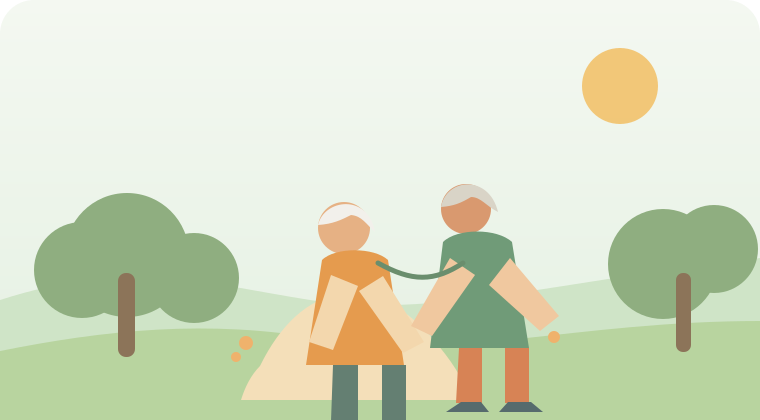
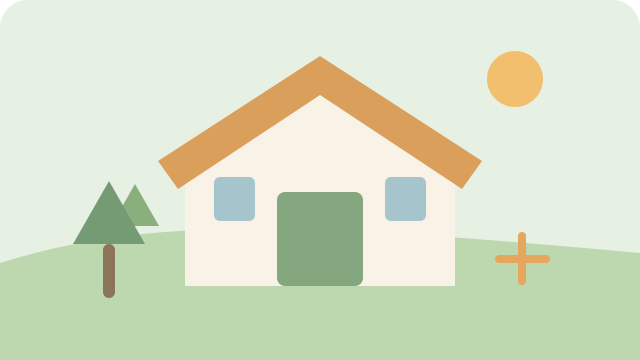
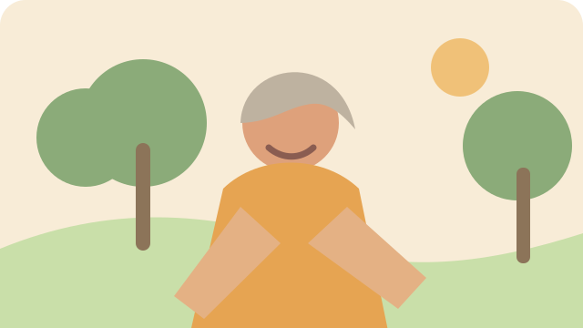

10月5日 · 星期一
下午好，李奶奶
今天也慢慢来。

今天的陪伴
老伴，下午要不要出去走走？
慢慢来，我记得我们以前每天晚饭后一起散步。
附近的小事
今天附近有 3 件小事
松柏社区 · 附近
附近活动
先看看，不想参加也没关系。
一起做喜欢的事
兴趣小组
兴趣相同的人，在同一个小组里。
本机演示小组真实服务需要由社区工作人员维护活动和成员规则。
给家里人
想和谁说句话？
选一句，确认后生成文字卡。
联
示例联系人本机演示联系人 · 未真实连接
演示状态表达小帮手
帮我说清楚
不知道怎么说，也没关系。先告诉我几个字。
帮手的边界这里只给候选建议，不会自动报名、发送消息或分享位置。
只记录这一次
我已经到了
要告诉家里人吗？

松柏社区活动室附近演示位置 · 不是真实定位
安全边界不持续追踪，不自动告警，不提供急救服务。
情绪陪伴
我的陪伴
把熟悉的称呼和记忆放进来。

老伴
“晚饭后一起散步。”
老
陪伴功能演示当前用文字和抽象形象卡演示交互，尚未接入真人声音、视频或数字人。
我的记录
刚刚发生的事
我的空间
我的设置
常用的内容，都在这里。
李奶奶本机演示账号
功能版边界这里展示的是本机演示，不代表已接入支付宝、真实家人、真实社区或真实定位。